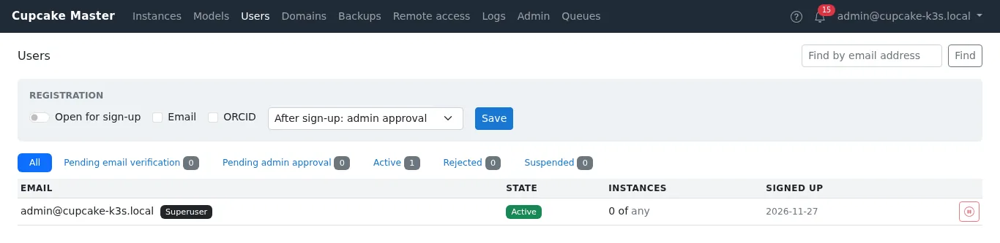

Users, in the top menu (staff only), lists every account with its state and how many instances it may have.

Sign-up
Sign-up can be closed, or open with either email verification or admin approval. With admin approval, new accounts wait until staff Approve or Reject them; staff are notified of each one.
Instance limits
Each account has a limit on how many instances it may own. Change it on its row. Staff have no limit.
Suspending accounts
A suspended account cannot sign in, and its API tokens stop working. Staff can suspend ordinary accounts, and superusers can also suspend staff; nobody can suspend an account of their own tier or above. Reactivate lifts it.